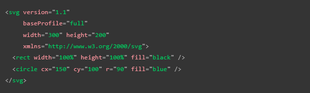
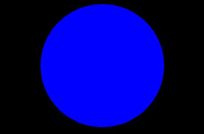
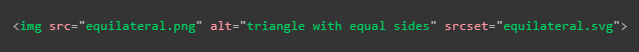
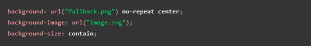
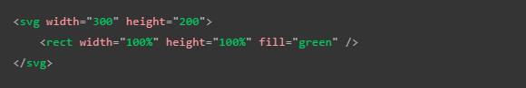
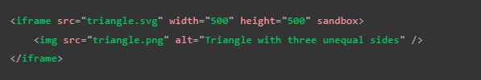

Se trata de un lenguaje de marcado (al igual que HTML) el cual contiene numerosos elementos para definir las formas que se desean que aparezcan en las imágenes, por lo tanto SVG únicamente está pensado para marcar gráficos, no contenido, por ello todos sus elementos y atributos van enfocados a esto.
El siguiente es un ejemplo de código y su respectivo resultado:


Puede parecer que el SVG es fácil de codificar; sin embargo, al tratarse de imágenes complejas deja de ser viable el hacerlo a mano, por ello muchas veces se utilizan editores de gráficos vectoriales como Inkscape o Illustrator, los cuales permiten utilizar herramientas gráficas para, por ejemplo, crear aproximaciones a fotos..
Otras de sus características positivas son:
El texto de las imágenes sigue siendo accesible para los motores de búsqueda, lo que es positivo para el SEO de la página
Pueden integrarse muy bien con el estilo de la página ya que cada elemento de la imagen es un elemento al que se le puede dar CSS o scripting a través de JavaScript
Sin embargo también cuenta con ciertas desventajas como:
El código puede complicarse rápidamente por lo que el tamaño y peso de los archivos se vuelve un factor a tener en cuenta, sin mencionar que también puede requerir un tiempo de procesamiento considerable
Pueden llegar a ser más difíciles de crear que las imágenes rasterizadas según cuál sea el tipo de imagen que se quiera crear
No es compatible con versiones antiguas de los navegadores
Por estas razones los gráficos rasterizados son mejores para imágenes de precisión como las fotos, aun así se puede leer este artículo para preparar SVG para la web.
Agregar SVG a la página
Existen tres formas de hacer esto las cuales son:
-
Incluirlo en un elemento "img"
Esta es la forma más rápida de hacerlo, para esto solo se necesitarían los atributos de width y height para delimitar el tamaño en el caso de que no posea una relación de aspecto inherente
Ventajas
Sintaxis simple con el texto equivalente en el atributo "alt"
Se puede convertir la imagen fácilmente al incluir el "img" dentro de un "a"
El navegador puede almacenar el SVG en la caché lo que resulta en tiempos de carga más rápidos para las páginas que usen la imagen
Contras
No se puede manipular la imagen con JavaScript
Si se desea incorporar CSS a la imagen se debe de incluir en el código SVG, de otra forma no tendrá efecto
No puede cambiar el estilo de la imagen con pseudoclases CSS (como :focus).
Compatibilidad con versiones anteriores de los navegadores
Ya que las imágenes vectoriales (SVG) solo son ejecutables en versiones recientes de los navegadores, por lo tanto en aquellos casos en los que el usuario acceda a la página desde uno desactualizado este no podrá visualizar los archivos SVG; por ello para evitar que la experiencia del usuario se vea afectada existe una forma de solucionar la compatibilidad con estos casos,
Para los navegadores que no admiten SVG lo recomendable es hacer referencia a una imagen rasterizada como png o jpg y usar el atributo "srcset" para hacer referencia al archivo SVG, ya que solo los navegadores actualizados reconocen este atributo serán capaces de visualizar adecuadamente la imagen SVG mientras que los que no visualizarán la imagen rasterizada, el código resultante sería el siguiente.

También se puede incorporar una imagen SVG como imagen de fondo del sitio web usando la táctica de compatibilidad expuesta anteriormente sin embargo al hacerlo está sujeta al mismo tipo de restricciones, es decir no podrá ser manipulado por JavaScript y podrá interactuar de forma limitada con el CSS, el resultado sería el siguiente.

Nota: Si las imágenes vectoriales no se visualizan en el sitio web pudiese deberse a que el servidor no está configurado correctamente para ejecutarlas.
-
Incluir el código SVG en el documento HTML
Otra forma de incluir imágenes SVG en nuestra página es incluir el código SVG directamente en nuestro documento HTML, para esto se utiliza la etiqueta "svg", dentro de esta se debe desarrollar todo el texto SVG, ya que sería una mala práctica intentar incluirlo fuera de esta, al implementarlo de esta forma se dice que se está utilizando SVG en línea; a continuación se muestra un ejemplo de código.

Ventajas
Incluir el código SVG directamente en el documento HTML ahorra un llamado HTTP por lo que el tiempo de carga se ve un poco reducido
Se puede implementar el CSS en plenitud, se puede añadir clases e identificadores a los elementos. De hecho, puede utilizar cualquier atributo de presentación SVG como propiedad CSS
Usar el SVG en línea es la única forma en la que se pueden usar interacciones y animaciones CSS en la imagen SVG
Puede usar el elemento SVG como hipervínculo envolviéndolo por un elemento "a"
Desventajas
Este método solo es oportuno si se utiliza el SVG en un solo lugar, ya que la duplicación hace que el mantenimiento requiera muchos recursos
El código SVG aumenta el tamaño del código HTML
Con este método de inclusión el navegador no podrá almacenar la imagen SVG en la caché, por lo que no se podrán agilizar las cargas futuras del elemento
Se puede incluir un respaldo en un objeto "foreignObject" para aquellos navegadores obsoletos que no puedan aceptar la imagen SVG, sin embargo los navegadores modernos también descargarán la imagen de respaldo por lo tanto es necesario analizar si es necesario provocar esa sobrecarga solo para incluir los navegadores desactualizados
-
Incrustar el SVG en un elemento "iframe"
Esta es la tercera forma de incluir el SVG en la página, aunque definitivamente no es la mejor forma de hacerlo; para aplicar este método se utiliza un "iframe" de forma común, haciendo referencia al archivo SVG e incluyendo un elemento "img" con una imagen rasterizada para mostrar en aquellos casos en los que el navegador no acepte la etiquetas "iframe" de la siguiente forma.

Desventajas
Los "iframes" incluyen un respaldo que se muestra en caso de que la etiquetas no pueda ser ejecutada por el navegador
A menos que el elemento SVG y la página tengan el mismo origen (ruta) no se puede usar JavaScript para manipular la imagen